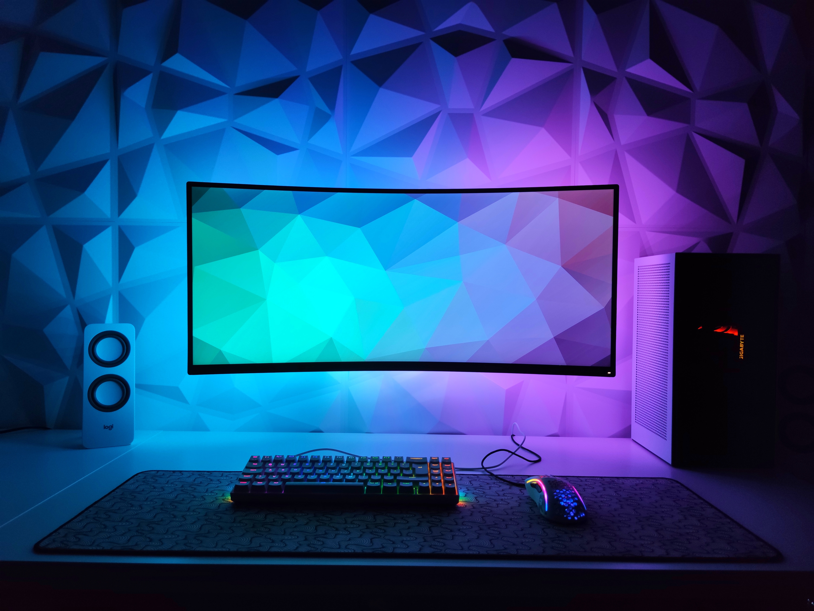
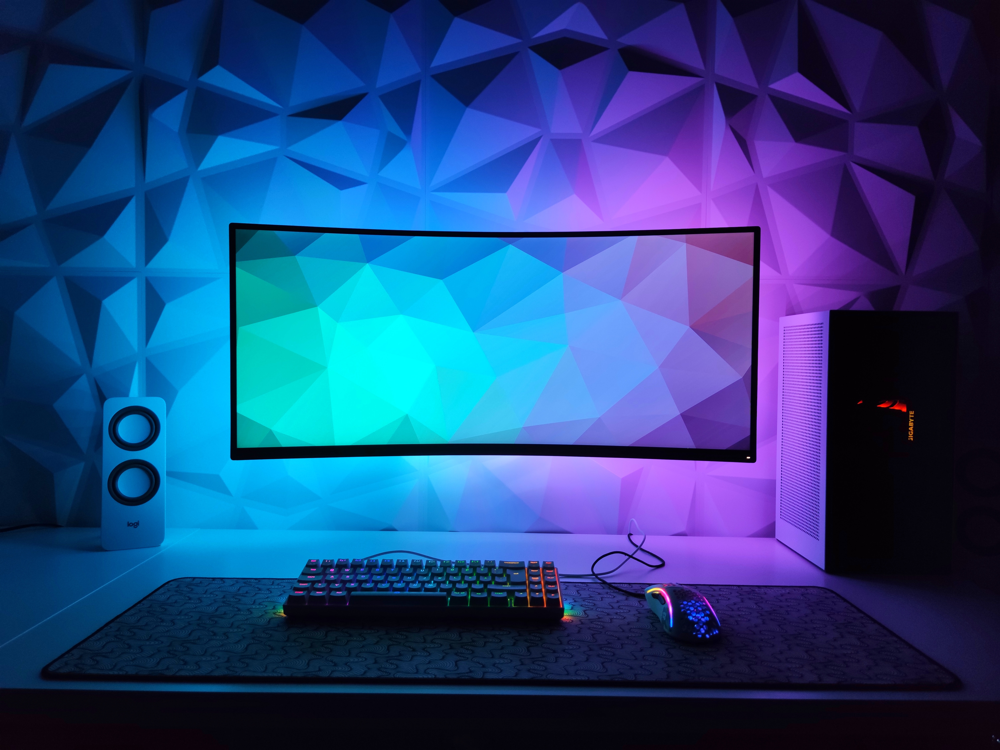

I’m a 19-year-old student with a deep passion for computer science and coding. My fascination with technology began at an early age. As a teenager, I spent countless hours exploring programming languages, tinkering with code, and building my own software projects.
Driven by an insatiable curiosity, I decided to pursue a degree in computer science to further develop my skills and knowledge. Outside of my academic pursuits, I actively participate in coding competitions and hackathons, where I collaborate with like-minded individuals to create innovative solutions.
Beyond the technical aspects, I see coding as a creative outlet and a means to make a positive impact on the world. I’m particularly interested in leveraging technology to solve real-world problems, whether it's developing applications for social good or contributing to open-source projects.
As a student, I’m constantly seeking new challenges and opportunities for growth. I regularly attend conferences and workshops to stay updated on the latest advancements in the field. With a strong foundation in computer science and a burning passion for coding, I look forward to a future where we can make a meaningful contribution to the world of technology and continue to pursue our dreams.

Graduating from primary school is a significant milestone in a young person's life. It marks the end of an era filled with laughter, friendships, and the foundation of knowledge. For years, these students have grown both academically and socially, guided by dedicated teachers and supported by their families.
The culmination of years of hard work and dedication, finishing high school is a defining moment in a student's life. It represents the end of a transformative period filled with growth, self-discovery, and countless academic and personal accomplishments.
Attending college for computer science is an exciting and transformative experience. As a student in this field, you are embarking on a journey that will equip you with the knowledge and skills to shape the future of technology. In the halls of the computer science department, you will find yourself immersed in a world of algorithms, programming languages, and cutting-edge technologies.
Completing a course in English and French is a significant achievement that opens doors to new opportunities and deepens your understanding of different cultures and languages. Through your dedication and hard work, you have honed your language skills, expanded your vocabulary, and gained a better grasp of grammar and syntax.
 
